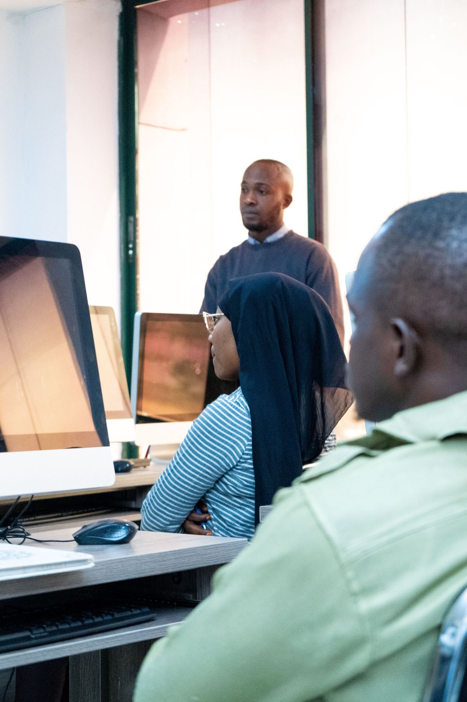

Make the hub useful beyond campus.
FORGE is designed as a shared capability: students learn by doing, faculty can pursue applied work, and local organizations get a route into university expertise.

Different groups. Different value.
Select a group to see what FORGE is meant to change for them.
Students: leave with evidence of skill.
Personal sandbox environments, hands-on labs, supervised client work and paid fellowships create opportunities to practise the work employers actually need done.
Target by 2032: 1,000 students using hands-on labs and servers each year; 100 paid fellowships annually.Faculty: turn teaching into applied research.
Modern compute and device labs support research and coursework. Faculty chairs and supervised project structures connect research questions with practical work.
Intended outcome: more applied projects with infrastructure and partners available in one place.Industry: a clearer route to emerging talent.
Memberships, sponsored projects and the partner portal let organizations bring forward real problems and work with students under faculty supervision.
Targets: 25 active partners by 2030 and 40 real client projects per year by 2032.Community: practical capacity close to home.
Managed hosting and technical support could help nonprofits and small businesses access services and talent that might otherwise be out of reach.
Intended outcome: more regional collaboration and stronger local pathways into technology careers.Count outcomes, not just equipment.
annual student users by 2032
active industry partners by 2030
client projects per year by 2032
platform availability target
These are proposed planning targets. The full project report contains the detailed measurement approach and assumptions.
Open full project report ↗